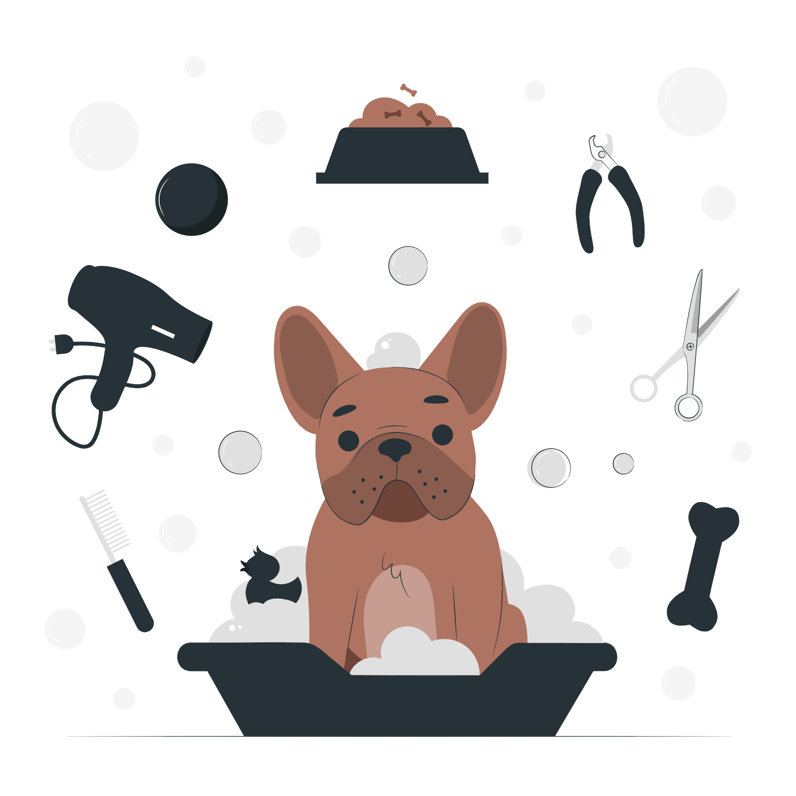

Um cachorro adulto tem 42 dentes;
O olfato canino é 1 milhão de vezes melhor do que o dos humanos;
Castrar seu cachorro pode ajudar a prevenir alguns tipos de câncer;
Se não for castrada, uma cachorra pode ter 66 filhotes em 6 anos;
A audição canina é 10 vezes melhor do que a dos humanos;>
O cão enxerga cores, mas não todas.
